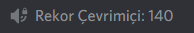
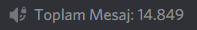

Discord İstatistik Sistemi
İstatistik sistemi sayesinde belirlediğiniz verileri özel oluşturulmuş ses kanallarında gösterebilirsiniz
Bu ses kanalları yazılı olan verileri yaklaşık 40 dakikada bir günceller.
Kullanım: m!istatistikkur <isim> <değişken(ler)>
Discord sunucunuzdaki aktif ve toplam üye sayısını bir arada göstermek isterseniz.
Örnek Kullanım: m!istatistikkur Aktif Üye: [aktifüye] / [toplamüye]
ÖRNEK:
Discord sunucunuzdaki rekor çevrimiçi sayısını göstermek isterseniz.
KULLANIM:
Örnek Kullanım: m!istatistikkur
ÖRNEK:
Discord sunucunuzdaki yetkili sayısını göstermek isterseniz (Yönetici izni)
Örnek Kullanım: m!istatistikkur Aktif Yetkili: [aktifyetkili] / [toplamyetkili]
Discord sunucunuzdaki görevli sayısını göstermek isterseniz (m!görevliler)
Örnek Kullanım: m!istatistikkur Aktif Görevli: [aktifgörevli] / [toplamgörevli]
Discord sunucunuzdaki belirlediğiniz role sahip üye sayısını göstermek isterseniz
Örnek Kullanım: m!istatistikkur <isim> @Rol
Discord sunucunuzdaki toplam yazılan mesaj sayısını görmek isterseniz.
Marpel sunucunuza katıldığı andan itibaren yazılan mesajları sayar.
Örnek Kullanım: m!istatistikkur <isim> [toplammesaj]
